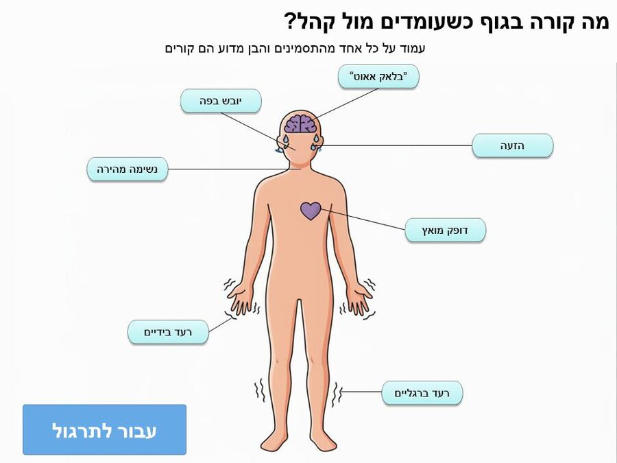

Back to projects
Public Speaking
Videos, a podcast and an interactive infographic I created for a hybrid, asynchronous course that teaches students to speak in front of an audience with confidence.
- Audience
- Entrepreneurship and law students
- My role
- Content, filming, editing, directing, infographics and interactions
- Tools
- Storyline, Base44, H5P, video editing
- Format
- Hybrid asynchronous course

The challenge
Public speaking is a skill you learn by doing, not just by hearing about it. The challenge was to teach it asynchronously, with no instructor in the room, while balancing theory and hands-on practice.
For entrepreneurship and law students it's a core skill: pitching to investors, arguing in court.
Course structure
The course guides learners through six stages. Each stage combines comprehension questions with practical exercises.
- Handling stress
- Appearance and dress
- Body language
- Using the space
- Your voice as a tool
- Connecting with the audience
My work

Body Language
Podcast

The videos are in Hebrew. They will be embedded here once uploaded to YouTube.